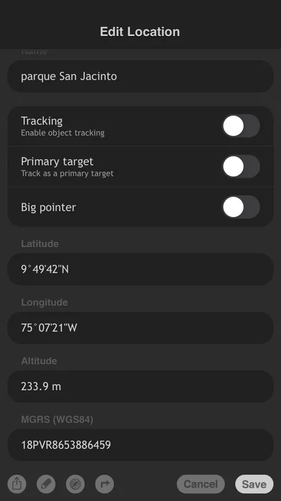
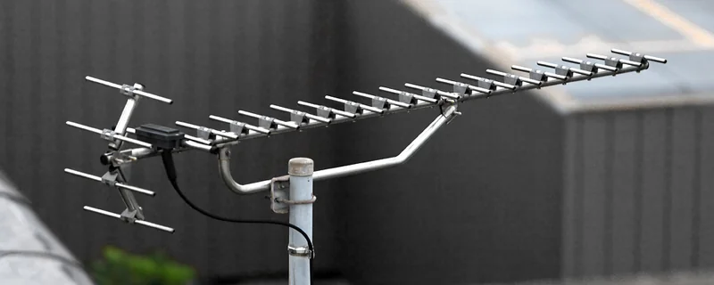

Hi, I’m Sanjay. Along with Gabriel, another tech-savvy friend of mine, we made our first 3/4G antenna purchase after doing some digging into commercial solutions for connectivity issues.
In this guide, I’m going to offer you some tips on how to go about buying a 3/4G antenna.
What is a 3G or 4G antenna?
3G and 4G are abbreviations for the set of technologies needed to transmit voice and data over mobile networks.
This set includes everything from the types of cell phones and antennas to the communication protocols between them, all of which are necessary to send voice or data via cellular telephony.
I won’t get into the nitty-gritty, but just for curiosity’s sake, it’s worth knowing that the G stands for generation, and the numbers refer to the third and fourth generations of these technologies.
Previous generations didn’t allow for data transmission, only voice, like a radio. So, for example, old-school phones—which we call “flechas” (arrows) in Colombia—aren’t built to receive Internet data. To connect to the Internet, devices need to be 3G-enabled or higher, meaning they must be smartphones →.
What is a 3/4G antenna used for?
I recently learned that the Internet signal that reaches our phones travels through invisible electromagnetic waves. Phones have a small antenna inside that captures these waves, which is what gives us Internet access.
Gabriel and I have discovered that buying a commercial 3G or 4G antenna is one of the best ways to get a stable and reliable Internet connection. This is especially true for fixed locations like a house, a school, a library, or a shop, where you’re using mobile telephony in areas with poor coverage.
Basically, what the antenna does is capture and amplify the specific cellular data signal (3G or 4G) that’s traveling through the air as electromagnetic waves from a higher point than where you are—above trees, buildings, or hills—and brings it down to your level via a cable.
Once it’s there, the signal can be shared throughout the space by creating a WiFi network or via cable, using a modem or router. I know these terms might sound a bit confusing, but as you go through these recommendations, you’ll get a clearer picture of them.

If you want to know how to buy an antenna and what parameters you should keep in mind to search for and decide on the 3G/4G antenna that will improve your mobile Internet connection, follow our recommendations.
Before we start, a quick thought
Sometimes we decide to buy the cheapest option because we want to save money. But as they say, “cheap can turn out expensive,” and when it comes to technology like an antenna, this is usually true.
We’ve seen many antennas that end up as junk because they don’t do the job (like those from satellite TV providers). They get installed in cities and rural areas, creating electronic waste that, besides being an eyesore, never gets removed or reused.
It’s also important to be clear about the care and maintenance your purchase might require. Sometimes we buy something, and when it needs maintenance, we don’t have the time or resources to deal with it, and it ends up useless. When you team up with others, you can share the care and split the costs, making it much lighter and more manageable.
Make sure the antenna you buy works for your specific conditions and is the best option for you.
What do you need?
- To recognize the geography of the place where you need the signal.
- To identify which operator or operators work best in the region.
- An antenna supplier.
- Some money.
- To meet with your community to identify the best option.
How to do it?
Below, we present the steps we consider when deciding what type of 3G/4G antenna to buy.
Step 1 → Determine if you need a 3/4G antenna
There are places where the cellular signal is very weak. You can confirm this on your phone by looking at the connection bars: you might see only one bar or something that says H+, E, or even no signal at all.
However, when you move a few meters or a few kilometers, the signal appears or improves, and you start seeing bars with the 3G or 4G symbol on your phone.
If this is your case, there might be cell towers around you that you don’t have a direct line of sight to, and therefore, you aren’t able to connect to the 3G/4G network from your initial spot.
Buying a 3G/4G antenna will allow you to have a stable Internet connection, but there must be cellular coverage in the area.
It’s not a cheap solution, but it is the most reliable way to establish an Internet access point for your community if you are in areas with low mobile coverage.
If there is no mobile coverage at all, you won’t be able to get connectivity with one of these antennas. To get it, you’ll have to resort to solutions like the ones we describe in the guide on How to buy a satellite internet service for non-interconnected places?, where there are various satellite solutions, though they tend to be more expensive.
Step 2 → Ask yourself these questions based on your needs
Where am I located geographically?
The first thing is to understand the geography of where you are. What you’re trying to identify are the cell towers that could provide you with a signal. For 3/4G antennas to work, they generally need to “see” a tower, or at least be pointed in the same direction.
If you live in a region with many mountains, it will be a bit harder to get a good signal compared to a flat area.
If possible, look for the nearest cell tower: look for tall towers with antennas. They are usually located on the highest mountain peaks to allow for greater coverage.
If you don’t know where the nearest cell tower is, you can also ask your neighbors; they might have already spotted it.


Taken from Wikimedia Commons
- Which mobile phone providers have coverage in this area?
In rural areas or places far from urban centers, mobile operator coverage can be quite hit-or-miss.
Make sure to find the one that works best in the region. Ask your neighbors which one works best for them. Identify which ones have better coverage—meaning they provide a more stable and faster service.
💡 Keep in mind that the coverage of these providers changes over time as they install new relay antennas or as more people subscribe to their services, saturating their signal.

This information is important for the antenna supplier: make sure the modem they give you is “unlocked” (open bands), so you can use the operator you choose without restrictions.
- Where are the nearest cell towers located?
Use a mobile app to identify which cell towers are closest.
To do this, search for “Cell towers” or “Cell signal” apps in the Google Play or Apple Store, download one, and use it to identify which antennas, and from which operators, are closest to where you are.
If there is no signal in the place where you want to test, you can download the antenna map in a place with a connection and carry it on your phone. It will allow you to interpret it by matching the geographic North with the map’s North.

- What space do I want to provide with internet?
To decide where you are going to leave the modem connected, emitting a WiFi signal, it’s important to consider the geographic location and its access to electricity.
We recommend thinking about public spaces like schools, libraries, or community halls, since internet in those spaces can benefit more people.
If you want the connection for your home, it might be worth putting it in a space like the living room or dining room, rather than in the bedrooms. Spaces in the house meant for rest should be free of the device’s electromagnetic fields, which could affect you, and besides, physical obstacles can affect the signal in the rest of the house.
- How much, and for what, will those who connect use the internet?
Defining how much you’re going to use the internet and what you want to use it for is important to know what to expect from the antenna you’re going to buy.
To refine your expectations, you can read How is Internet usage measured?
- How much money do I, or do we, have to buy an antenna?
In Colombia, in 2024, one of the most powerful antennas on the market, with a robust 15-meter-long cable plus the modem, cost around COP 1,300,000 or USD 300.
But you don’t have to face this expense alone; think that the more people who contribute to the purchase of the antenna, the cheaper it will be per person. So, we encourage you to talk to family and neighbors to agree and share the signal.
Step 3 → Identify what you need to know to answer these questions
Recognize the topography of the place
After answering where you are, it’s important, if possible, to get the precise location of the place where you want to connect.
With the help of a ‣ app, locate the exact coordinates of the place where you want to install the antenna.
This data will be useful at the time of purchase. Suppliers usually have access to updated databases on the coverage of different phone providers, as well as their locations, which allows them to advise you more accurately on the type of antenna that best meets your specific needs.
Your phone may have an app to locate your coordinates. If you use Android, go to Google Maps. If you have an iPhone, go to Maps.
Find your location point, and you’ll be able to access the exact coordinates of where you are. Finally, write down this data to have it handy when you need it.

- Where to buy the antenna?
You can do a SOLE to perform an Internet search where your Big Question contains terms like 4g signal booster antenna. The search should lead you to find nearby distributors.
When you talk to the company that distributes the technology, have all the data you can on hand. Together, you will find the best solution for the place where you are going to set up your Internet access point.
- What should they give you when you have made the purchase of your antenna?
You have to keep in mind that for the antenna to work, it needs to be connected to a device. So, the minimum your antenna kit should contain is:
- A 3/4G antenna
- Basic mounting hardware
- The connection cable
- A 3/4G modem
Antenna
The necessary antenna is a Yagi type →. It can be similar to the one in the image above, or it can also be encapsulated in a plastic protector, which will protect the antenna and its connections from weather conditions, extending its useful life.
One thing to keep in mind with the antenna is its power. This data is expressed in dB: a 65dB antenna will have more power than a 15dB antenna. As a general rule, the further the antenna is from the provider, the more power you will need to establish a connection.

Cable
The cable to connect the antenna to the modem is similar to the coaxial cable → used in television connections. However, it is not the same. There is a wide variety of cable types, but at a minimum, for these types of applications, cables like RG-6 → should be used. That said, it is recommended to use shielded cables that minimize signal loss and reduce noise in the system.
You should not modify the cable the supplier gives you in any way: the splicing between the cable and the connectors at the ends is done in a way that minimizes noise in the system; any alteration can make all components completely useless.

Modem / Router
Normally, antenna kits come with a modem and a router, which will allow you to connect and share the mobile network signal captured by the antenna.
If you already have a modem, at the time of purchase, verify that it can connect to the antenna and, if necessary, that the supplier sends you the necessary adapters to make the connection.
Step 4 → Make the final decision
Depending on your geographic conditions, what you want to use it for, and your budget, ask the seller about all possible options.
Don’t forget to talk about the care and maintenance of the devices, especially the costs involved and how often you will have to assume them.
The most expensive one is not necessarily the one that will serve you best.
Don’t be fooled
Sometimes, sellers will want to propose more sophisticated and expensive solutions than what you actually need.
Ask a lot of questions. It’s the only way to learn and create criteria to find the best possible option.
How much is enough?
Buying an antenna with the necessary characteristics to access the mobile network will allow you to have a stable connection with which, for example, you can meet to learn how to learn, in a group, using the internet.
You can also watch movies, consult a doctor about a situation, communicate with family or friends… so let’s find new ways to use the internet!
Also, when you have a more stable connection, doing a SOLE will be easier.
A single antenna and a single connection, in a group, will be more than enough to enjoy all the options that the internet offers. Even more so, if you use the internet on shared computers, it will be safer, more private, and more fun.
Related solutions
- 4G antenna? →
- How to use the game to learn how to take care of equipment as a community? →
- How to buy a satellite antenna? →
Remember that at Voltaje ⚡⚡ you can find many more solutions to connect without fear to using the internet in a group. Go ahead and keep browsing! See more solutions →